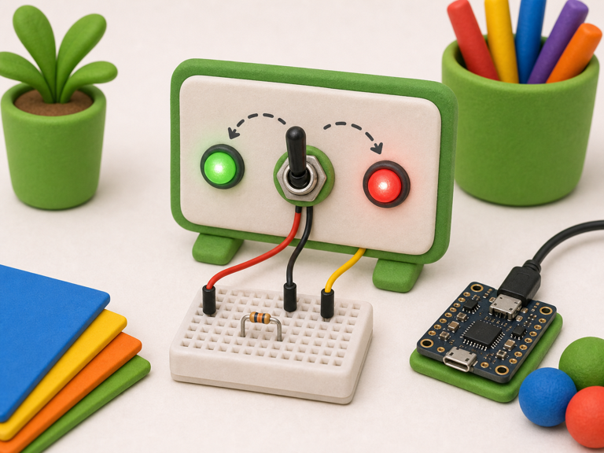
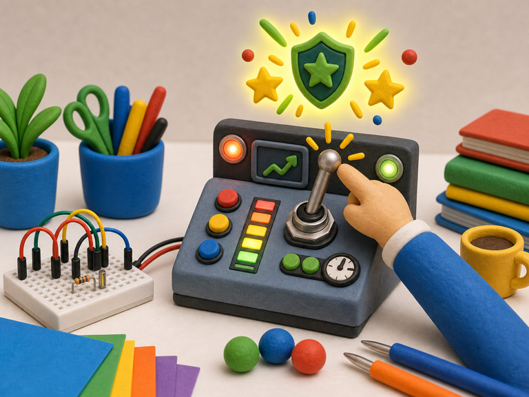

Mode selector
DetectSwitch is flipped
->
DecideNew mode selected
->
DoChange behaviour
A toggle switch stays in one position until someone flips it back.
That makes it useful for modes, power choices, and settings that should not disappear when you let go.
Your projects can use toggle switches for arming, choosing, locking, and secret control panels.


from gpiozero import Button
switch = Button(17)
on = switch.is_pressedfrom picozero import Switch
switch = Switch(2)
on = switch.is_closedon when your project needs to react to the switch position.